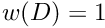
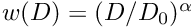
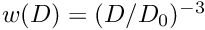

The aerosol weighting function NetCDF dimensions are:
aero_weight_group: number of aerosol weighting groups
aero_weight_class: number of aerosol weighting classes
The aerosol weighting function NetCDF variables are:
weight_type (no unit, dim aero_weight): the type of each weighting function, with 0 = invalid weight, 1 = no weight ( ), 2 = power weight ( ), 3 = MFA weight ( )
weight_magnitude (unit m^{-3}, dim aero_weight): the number concentration magnitude associated with each weighting function
weight_exponent (no unit, dim aero_weight): for each weighting function, specifies the exponent for the power weight_type, the value -3 for the MFA weight_type, and zero for any other weight_type
PartMC 2.8.0 documentation generated by doxygen 1.9.6